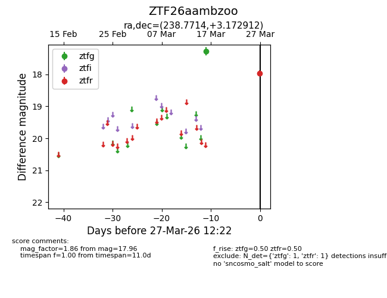
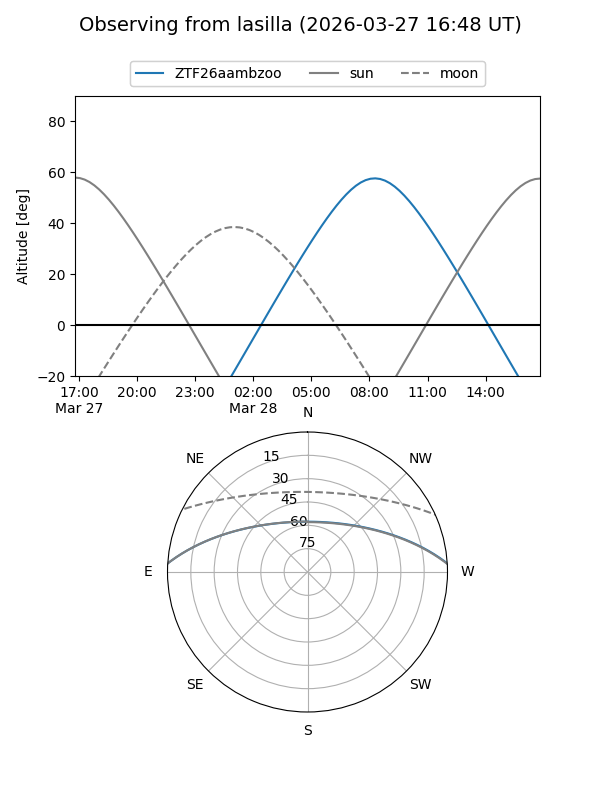
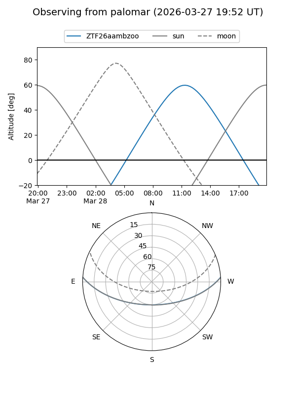

ZTF26aambzoo
Target ZTF26aambzoo at 2026-03-27 12:26
Aliases and brokers:
FINK: link
Lasair: link
ALeRCE: link
alt names
ZTF26aambzoo (ztf,fink_ztf)
Coordinates:
equatorial (ra, dec) = 238.7714,+3.17291
equatorial (HMS+DMS) = 15:55:05.13,+03:10:22.48
galactic (l, b) = (12.4760,+40.05410)
Flags:
Photometry:
last ztfg=17.27, ztfr=17.96
1 ztfg, 1 ztfr detections
Lightcurve

Visibility


Additional plots